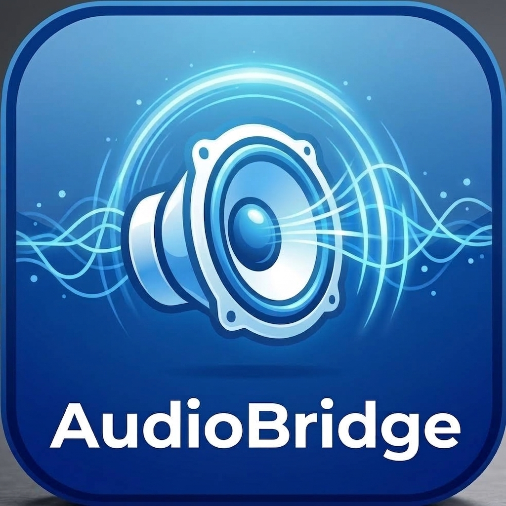

Open-source · Windows + Android
AudioBridge
Звук с компьютера — на телефон по USB-кабелю.
Скачай, запусти, нажми «Старт» — готово.
AudioBridge для Windows
portable
.NET и adb внутри
без установки
приложение ставит сама
Нужен файл для телефона отдельно? Скачать audioBridge.apk →
Как запустить
1
Скачай и запустиРаспакуй AudioBridge.rar и запусти AudioBridge.exe. Всё необходимое уже внутри.
2
Подключи телефонUSB-кабель и USB-отладка в настройках для разработчиков.
3
Нажми «Старт»Программа сама сделает мост и установит на телефон приложение, если его нет.
4
СлушайНа телефоне открой AudioBridge и нажми «Старт» — звук ПК уже на телефоне.
Почему AudioBridge
Совсем просто
Одна кнопка вместо связки настроек. Без инсталляторов и прав администратора.
Самодостаточно
.NET и adb внутри установки — ничего не нужно доустанавливать.
Маленькая задержка
~50–100 мс по USB-кабелю. Стерео 48 кГц 16 бит без потери каналов.
Тест-тон
Встроенный синус 440 Гц — проверить канал за секунду, без включения музыки.